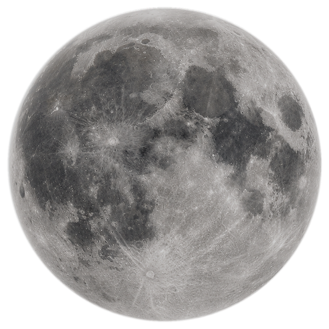

Prévisions d’expert
Heure par heure et jusqu’à 10 jours : température, ressenti, vent, rafales, humidité, pression, UV, précipitations. Touchez une donnée pour plonger dans le détail.
Météo pour iPhone, iPad et Apple Watch
Liquid Weather fusionne les meilleurs modèles météo du monde — AROME, ICON, ARPEGE, GFS, ECMWF — dans une interface en verre liquide, fluide et d’une précision rare.
Fonctionnalités
Une seule app pour comprendre le temps qu’il fait, celui qui arrive, et la confiance qu’on peut lui accorder.
Heure par heure et jusqu’à 10 jours : température, ressenti, vent, rafales, humidité, pression, UV, précipitations. Touchez une donnée pour plonger dans le détail.
Vigilances officielles MeteoAlarm de votre zone, notifications utiles et indicateurs de risque lisibles d’un coup d’œil.
Une interface en verre liquide pensée pour iOS : tout répond, tout s’anime, rien ne surcharge.
iPhone, iPad, Apple Watch. Widgets d’écran d’accueil et d’écran verrouillé, complications, tableau de risques sur iPad.
Cartes météo
Température, pluie, vent, rafales, nuages, orages, neige : animés heure par heure jusqu’à cinq jours. Liquid Weather choisit automatiquement le modèle le plus fin selon votre zoom — AROME HD à 0,01° sur la France.
Les cartes montrent des champs de modèles météorologiques, pas des observations radar. La foudre, elle, vient du satellite EUMETSAT.
Illustration : données fictives.
Comparaison des modèles
Mettez AROME, ICON, ARPEGE, GFS et ECMWF face à face. Voyez où ils s’accordent, où ils divergent, et comment leurs prévisions évoluent d’un run à l’autre.
Déplacez le curseur : plus l’échéance est lointaine, plus les modèles s’écartent. C’est exactement ce que Liquid Weather vous montre — pour décider en connaissance de cause.
Écart entre modèles à
Illustration : données fictives.
La Lune
Phases réelles, lever et coucher, éclipses : tout est calculé à partir des éphémérides, avec une vraie photo de la Lune qui change de phase sous vos yeux.
Demander à Liquid
Écrivez comme vous parlez. Un modèle d’intelligence artificielle exécuté sur l’appareil (Apple Intelligence, là où il est disponible) répond à partir des prévisions déjà chargées et dessine les graphiques qui illustrent sa réponse. Chaque valeur affichée est réelle.
Exemple illustratif.
Widgets et Apple Watch
Écran d’accueil, écran verrouillé, poignet : des widgets et complications taillés dans le même verre.
Prévisions
Indice UV

Lunaria · la Lune
Apple Watch
Sous le capot
Les cartes lisent les fichiers ouverts de Météo-France, du DWD et de la NOAA puis les décodent sur votre appareil. Aucun serveur Liquid Weather ne s’interpose entre vous et les données officielles.
Vie privée
Aucune inscription, aucun identifiant : ouvrez l’app et c’est parti.
Pas de publicité, pas de système de suivi publicitaire propre à l’application.
Autorisez-la pour la météo locale, ou choisissez simplement une ville. Vous gardez la main.
Questions fréquentes
Oui. L’application est gratuite, sans publicité ni abonnement.
Les prévisions viennent d’Open-Meteo. Les cartes lisent directement les données ouvertes de Météo-France (AROME, ARPEGE), du DWD (ICON) et de la NOAA (GFS). La Lune est calculée sur l’appareil ; la foudre vient du satellite EUMETSAT ; les vigilances de MeteoAlarm ; le risque feux de Copernicus EFFIS.
Non, et c’est dit clairement dans l’app : ce sont des prévisions de modèles, jamais des observations radar. Seule la couche foudre est une observation satellite.
iPhone, iPad et Apple Watch. Les résumés et l’assistant IA fonctionnent sur les appareils compatibles Apple Intelligence.
Non. Elle est facultative : vous pouvez choisir une ville à la main et modifier l’autorisation à tout moment dans les réglages iOS.
Par e-mail à supportliquidweatherapp@gmail.com, ou depuis la page Assistance. Nous lisons tout.
Une question, une idée, un souci ? Écrivez-nous : nous lisons tout.